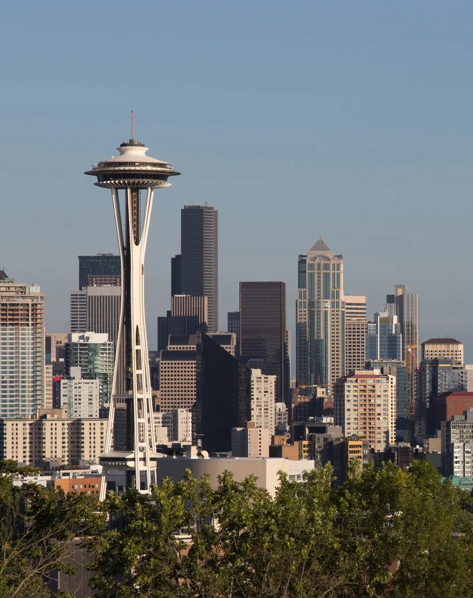

What I've learned over the years
Leadership, Excellence, Curiosity—tenets of what I live by. From my experience being the Vice-Director of a RSO to my volunteer work, I aspire to learn to the fullest. Check out the languages, concepts, and people skills I've learned & developed.
BEYOND ACADEMIA
I have a life outside of school and research: rock-climbing, snowboarding, traveling… Learn more about me, my hobbies, and my aspirations.